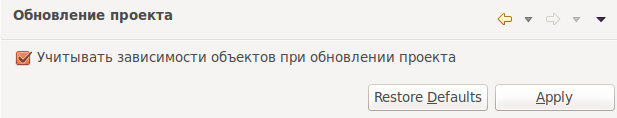

Настройки, управляющие обновлением проекта.

На странице настроек pgCodeKeeper -> Обновление проекта Вы можете включить учет зависимостей объектов при обновлении проекта. Это дополнит диалог наката выбранных объектов на проект их зависимостями, без которых накат на проект может происходить с ошибками.